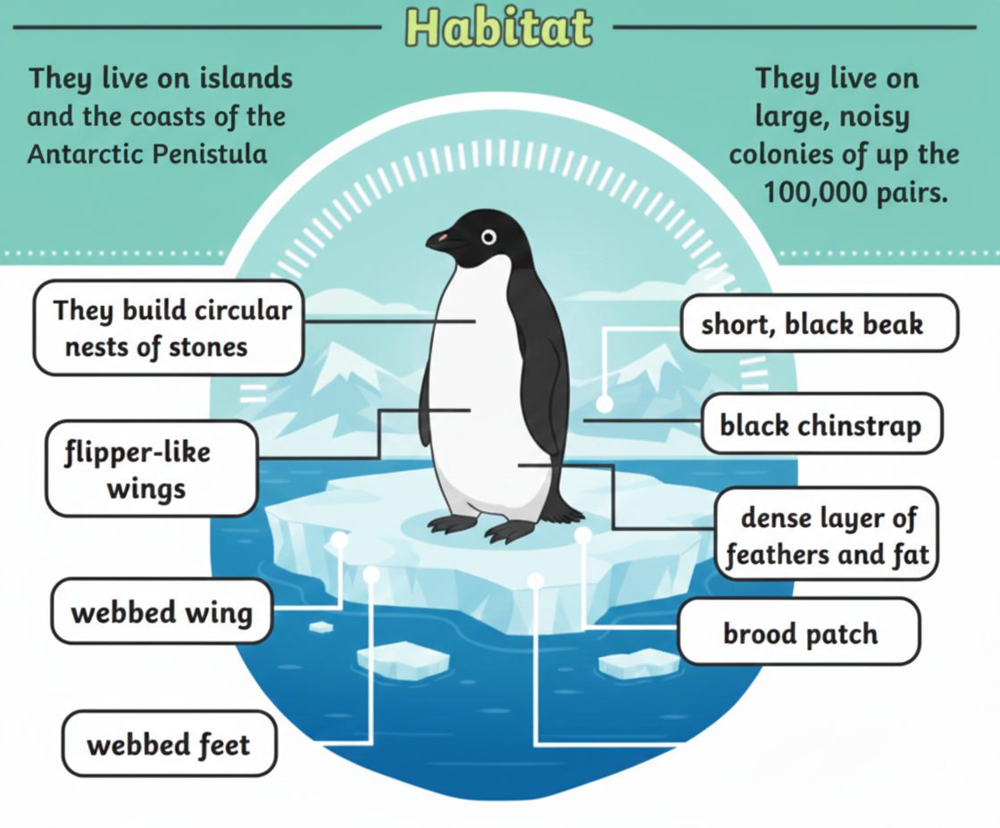
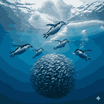

About Chinstrap Penguins

Chinstrap penguins are named after the thin black band under their head, which looks like a helmet strap. They are very active and aggressive compared to other penguin species.
Habitat

Chinstrap penguins live on Antarctic and sub-Antarctic islands. They prefer rocky, ice-free areas where they build nests using stones.
Diet

Chinstrap penguins mainly eat krill, fish, and squid. They are strong swimmers and can travel long distances while searching for food.
Interesting Facts
- The black chin line gives them their name.
- They live in very large breeding colonies.
- They are among the most aggressive penguins.
- They rely heavily on krill for food.